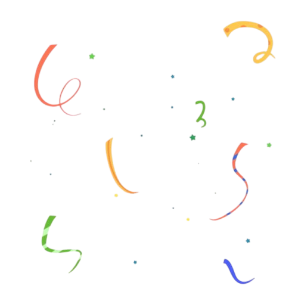

<ion-content [scrollY]="false" class="success-page">
  <div class="image-wrapper">
    

    <div class="success-overlay">
      <div class="success-container">

       <div class="success-icon">
  <div class="inner-circle"></div>
  <ion-icon name="checkmark-outline"></ion-icon>
</div>


      <div class="accept">  <h2>Your Order has been accepted</h2></div>
<div  class="place"> <p>Your items has been placed and is on it's way to being processed</p>
</div>
        
        <ion-button expand="block" class="track-btn" color="success" style="color: white;">Track Order</ion-button>


       
  <ion-button expand="block" fill="clear"> <a class="back-home" routerLink="/home">Back to home</a></ion-button>
      </div>
    </div>
  </div>
</ion-content>
